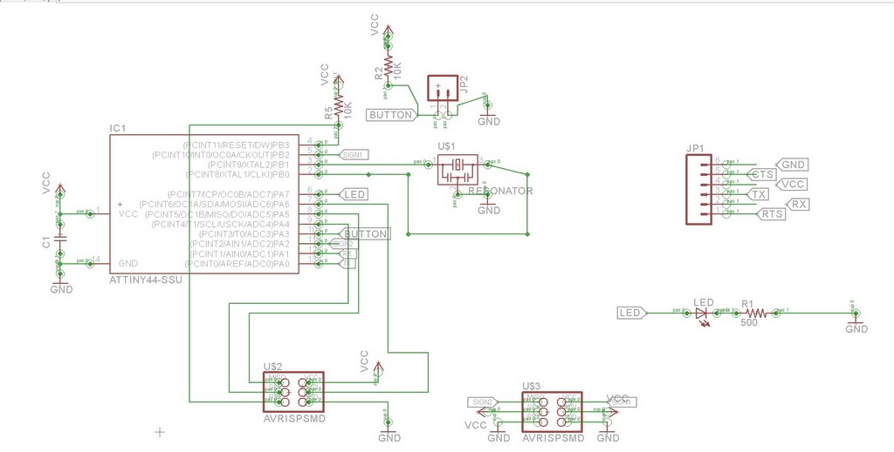
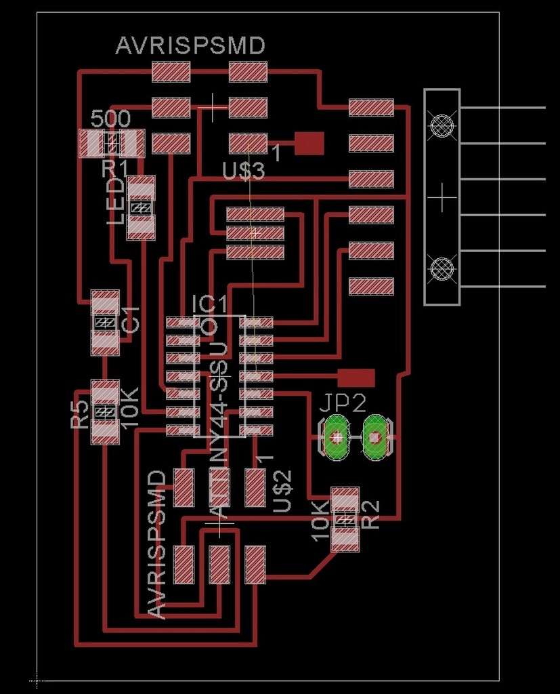
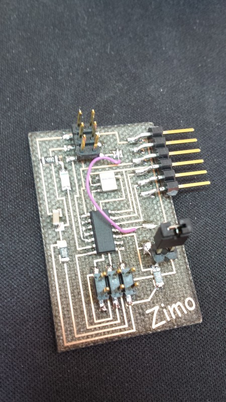
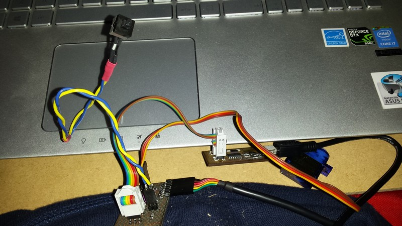
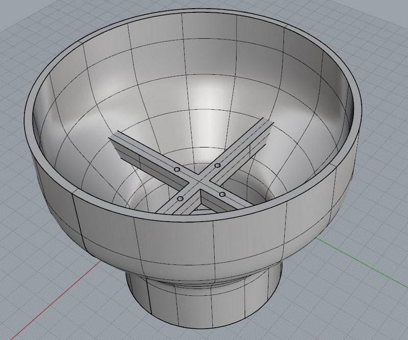
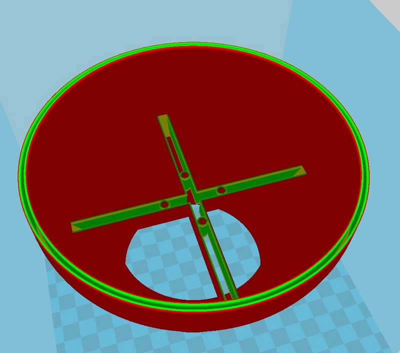
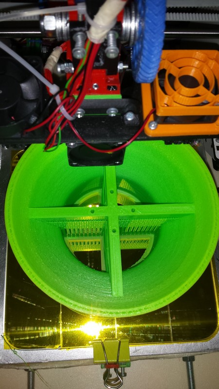
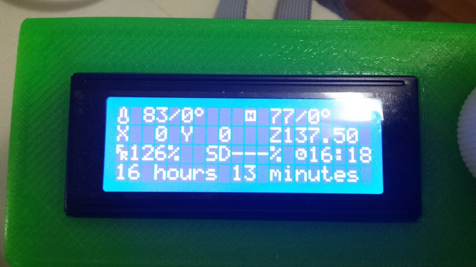

This week lecture is to experiment some output device of the microcontroller and pheripheralI decide to make a confetti cannon (blower) for the marriage of my sister so I use this lecture to make a board to drive an ESC for a brushless, to make the dutched fan.I design a board using the attiny44 in Eagle, like the hello board but whit different pinout to fit the servo standard.

I put in the circuit a connector to the button (I need to pot outside of the board the activation of the motor) I also adapt an ISP connector to fit 2 standard servo plug.
I connect the servo control pin to PA2 and PB2 so I have an AUX servo channel.After i make a the surface mount PCB and engrave it whit flexx laser.

To fit all connection in one layer I need to put a jumper near the micro and the top ISP connector.
It can be seen in the picture below, the purple cable.

Download the ZIP file of the schematic and board for Eagle cadI made the programming in Arduino IDE, trying to use servo library.
This library is based on a 16 bit timer that attiny44 have but for some reason it didn't work whit this device, so i have to switch to another library, very similar to the servo called softwareservo or servo8bit, that use a 8 bit timer. Here is the servo.h file.
/*
Servo.h - Interrupt driven Servo library for Arduino using 16 bit timers- Version 2
Copyright (c) 2009 Michael Margolis. All right reserved.
This library is free software; you can redistribute it and/or
modify it under the terms of the GNU Lesser General Public
License as published by the Free Software Foundation; either
version 2.1 of the License, or (at your option) any later version.
This library is distributed in the hope that it will be useful,
but WITHOUT ANY WARRANTY; without even the implied warranty of
MERCHANTABILITY or FITNESS FOR A PARTICULAR PURPOSE. See the GNU
Lesser General Public License for more details.
You should have received a copy of the GNU Lesser General Public
License along with this library; if not, write to the Free Software
Foundation, Inc., 51 Franklin St, Fifth Floor, Boston, MA 02110-1301 USA
*/
/*
A servo is activated by creating an instance of the Servo class passing
the desired pin to the attach() method.
The servos are pulsed in the background using the value most recently
written using the write() method.
Note that analogWrite of PWM on pins associated with the timer are
disabled when the first servo is attached.
Timers are seized as needed in groups of 12 servos - 24 servos use two
timers, 48 servos will use four.
The sequence used to sieze timers is defined in timers.h
The methods are:
Servo - Class for manipulating servo motors connected to Arduino pins.
attach(pin ) - Attaches a servo motor to an i/o pin.
attach(pin, min, max ) - Attaches to a pin setting min and max values in microseconds
default min is 544, max is 2400
write() - Sets the servo angle in degrees. (invalid angle that is valid as pulse in microseconds is treated as microseconds)
writeMicroseconds() - Sets the servo pulse width in microseconds
read() - Gets the last written servo pulse width as an angle between 0 and 180.
readMicroseconds() - Gets the last written servo pulse width in microseconds. (was read_us() in first release)
attached() - Returns true if there is a servo attached.
detach() - Stops an attached servos from pulsing its i/o pin.
*/
#ifndef Servo_h
#define Servo_h
#include
/*
* Defines for 16 bit timers used with Servo library
*
* If _useTimerX is defined then TimerX is a 16 bit timer on the current board
* timer16_Sequence_t enumerates the sequence that the timers should be allocated
* _Nbr_16timers indicates how many 16 bit timers are available.
*/
// Architecture specific include
#if defined(ARDUINO_ARCH_AVR)
#include "avr/ServoTimers.h"
#elif defined(ARDUINO_ARCH_SAM)
#include "sam/ServoTimers.h"
#else
#error "This library only supports boards with an AVR or SAM processor."
#endif
#define Servo_VERSION 2 // software version of this library
#define MIN_PULSE_WIDTH 544 // the shortest pulse sent to a servo
#define MAX_PULSE_WIDTH 2400 // the longest pulse sent to a servo
#define DEFAULT_PULSE_WIDTH 1500 // default pulse width when servo is attached
#define REFRESH_INTERVAL 20000 // minumim time to refresh servos in microseconds
#define SERVOS_PER_TIMER 12 // the maximum number of servos controlled by one timer
#define MAX_SERVOS (_Nbr_16timers * SERVOS_PER_TIMER)
#define INVALID_SERVO 255 // flag indicating an invalid servo index
typedef struct {
uint8_t nbr :6 ; // a pin number from 0 to 63
uint8_t isActive :1 ; // true if this channel is enabled, pin not pulsed if false
} ServoPin_t ;
typedef struct {
ServoPin_t Pin;
volatile unsigned int ticks;
} servo_t;
class Servo
{
public:
Servo();
uint8_t attach(int pin); // attach the given pin to the next free channel, sets pinMode, returns channel number or 0 if failure
uint8_t attach(int pin, int min, int max); // as above but also sets min and max values for writes.
void detach();
void write(int value); // if value is < 200 its treated as an angle, otherwise as pulse width in microseconds
void writeMicroseconds(int value); // Write pulse width in microseconds
int read(); // returns current pulse width as an angle between 0 and 180 degrees
int readMicroseconds(); // returns current pulse width in microseconds for this servo (was read_us() in first release)
bool attached(); // return true if this servo is attached, otherwise false
private:
uint8_t servoIndex; // index into the channel data for this servo
int8_t min; // minimum is this value times 4 added to MIN_PULSE_WIDTH
int8_t max; // maximum is this value times 4 added to MAX_PULSE_WIDTH
};
#endif
Here is the softwareservo.h file.
#ifndef SoftwareServo_h
#define SoftwareServo_h
#include "Arduino.h"
#include
class SoftwareServo
{
private:
uint8_t pin;
uint8_t angle; // in degrees
uint16_t pulse0; // pulse width in TCNT0 counts
uint8_t min16; // minimum pulse, 16uS units (default is 34)
uint8_t max16; // maximum pulse, 16uS units, 0-4ms range (default is 150)
class SoftwareServo *next;
static SoftwareServo* first;
public:
SoftwareServo();
uint8_t attach(int); // attach to a pin, sets pinMode, returns 0 on failure, won't
// position the servo until a subsequent write() happens
void detach();
void write(int); // specify the angle in degrees, 0 to 180
uint8_t read();
uint8_t attached();
void setMinimumPulse(uint16_t); // pulse length for 0 degrees in microseconds, 540uS default
void setMaximumPulse(uint16_t); // pulse length for 180 degrees in microseconds, 2400uS default
static void refresh(); // must be called at least every 50ms or so to keep servo alive
// you can call more often, it won't happen more than once every 20ms
};
#endif
Download the ZIP file of the software servo libraryI try to investigate the reason the 16 bit timer baser library didn't work but for now i didn't find the solution. After I compile the sketch whit the sofwareservo library I upload it into the attiny44 using the fabISP and Arduino IDE, and test it whit a simple 9g servo.Here is my sketch in arduino used to control the ESC
#include
SoftwareServo myservo; // create servo object to control a servo
// twelve servo objects can be created on most boards
const int buttonPin = 3; // the number of the pushbutton pin
const int ledPin = 7;
int buttonState = LOW; // variable for reading the pushbutton status
int prevstate= HIGH; //prevoius state of button
int repeat = 0;
int pos = 0;
void refreshservo(){
SoftwareServo::refresh();
delay(45);
}
void arm(){
// arm the speed controller, modify as necessary for your ESC
setSpeed(0);
while(repeat <25){//waiting 1 sec refreshing servo command
repeat++;
refreshservo();
}
repeat=0;
setSpeed(100);
while(repeat <25){//waiting 1 sec refreshing servo command
repeat++;
refreshservo();
}
repeat=0;
setSpeed(0);
while(repeat <25){//waiting 1 sec refreshing servo command
repeat++;
refreshservo();
}
repeat=0;
}
void setSpeed(int speed){
// speed is from 0 to 100 where 0 is off and 100 is maximum speed
//the following maps speed values of 0-100 to angles from 0-180,
// some speed controllers may need different values, see the ESC instructions
int angle = map(speed, 0, 100, 0, 180);
myservo.write(angle);
}
void setup()
{
pinMode (buttonPin, INPUT);
pinMode(ledPin, OUTPUT);
myservo.attach(2); // attaches the servo on pin 9 to the servo object
arm();
//myservo.write(0);
//SoftwareServo::refresh();
}
void loop()
{
buttonState = digitalRead(buttonPin);
if (buttonState == LOW) {
delay(1); //little debounce
if (buttonState == LOW){
if (prevstate== HIGH){
prevstate=LOW;
//myservo.write(90);
digitalWrite(ledPin, HIGH);
myservo.write(180);
delay(45);
SoftwareServo::refresh();
}
}
}
else{
delay(1);//little debounce
if (buttonState == HIGH){
if (prevstate== LOW){
prevstate= HIGH;
//myservo.write(90);
digitalWrite(ledPin, LOW);
myservo.write(0);
delay(45);
SoftwareServo::refresh();
}
}
}
SoftwareServo::refresh();
}
I use a common 9g servo to test the firmware and all goes fine, so the servo make 0 position, 180 position, at the press of the button.

Video of test
After i try to connect the ESC to the board, and strange things happen.
The ESC goes in programming mode and the motor will not spin.
This is due to the fact the ESC need to be armed ( process who let the speed controller to know that you have the full control of the motor, and you have the radio controller in hands), this arming process in made by sending a full throttle command and a 0 throttle command at certain refresh rate.
the 8 bit library for the servo have a lot of jitter that make this arming process not working properly.
the servo inside electronics in a little bit more permissive and filter this jitter the ESC is really complex to drive so it didn't work.
I try to implement this sketch on an Arduino Uno whit the servo standard library and all works great,
I will try to make a SatshaKit and try to implement it in that way.
EXTRAS
For make a good confetti-blower i need to make a ducted fan, so I design an adapter for my motor and bladeI have a 16cm fan blade and i have to reduce the diameter to fir the 9 cm pipe-tube
I use rhino to design this adapter adding the place where to attach the motor to the structure.
I use the embedded calculation of the curves of rhino to make a good Venturi effect.

Sliced in Cura

Printed in ABS on my personal printer

And after "some" times it comes out

Download the ZIP file of the Rhino file and stl file